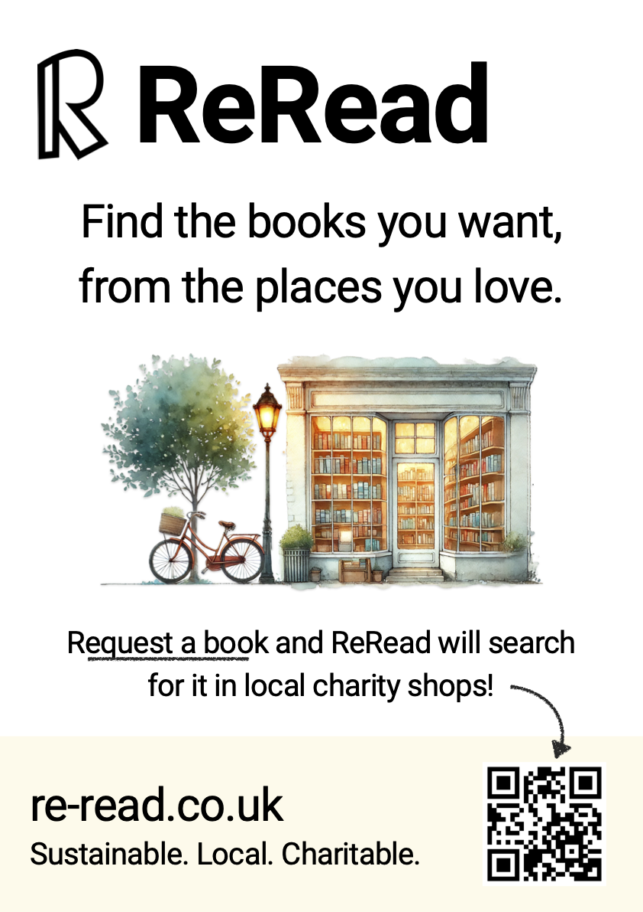

ReRead Posters in Redland, Bristol
Posters are up! At ReRead, we're on a mission to connect book lovers with the hidden gems they're looking for in local charity shops. Today, we're excited to kickstart our mission in Redland, Bristol.
On August 16th, ReRead officially started searching for our first supporters, those early adopters who believe in creating a sustainable, local, and charitable book discovery service (learn about how ReRead works >). You can spot our new posters in two charity bookshops in the Redland area: the British Heart Foundation on Whiteladies Road and Oxfam on Cotham Hill. This marks the start of our journey to raise awareness about ReRead. It was super exciting to see ReRead out in the wild for the first time!

We’re incredibly grateful to the local staff and volunteers at the British Heart Foundation and Oxfam for their enthusiastic support of ReRead’s mission. These volunteers work to fight heart & circulatory conditions and combat poverty & injustice worldwide 👏 If you’re in the area, be sure to check out these amazing shops! And while you’re there, keep an eye out for our ReRead posters. Snap a pic and share it on social media with #ReReadPosters to spread the word and connect with other book lovers!
The posters mirror the “look and feel” of our website. When customers scan the QR code, they’ll be directed to our site, where they’ll be greeted by the same cosy bookshop image — a consistent visual experience that’s designed to build trust and enhance user engagement.
These posters are the beginning of our connection with the local community. By sharing our message in places we love, we aim to inspire more like-minded people to join ReRead’s community. Next up: stay tuned for our upcoming video-short, highlighting our sustainable book discovery service. It features the unique charm of Bristol and its charity bookshops.
Help us build ReRead’s community, support these amazing charity shops, and be part of a movement that values sustainability, local communities, and the joy of reading. Request your first book today and join us on this exciting journey!